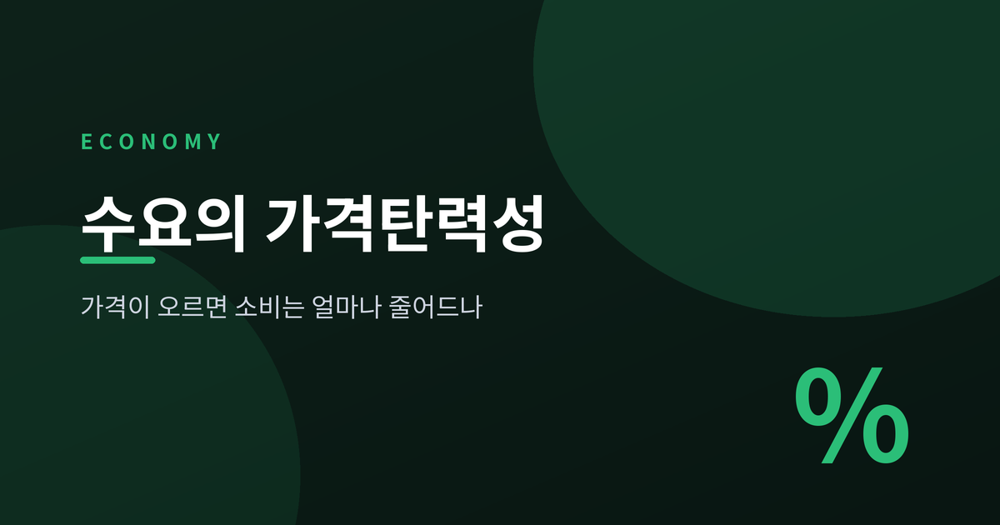
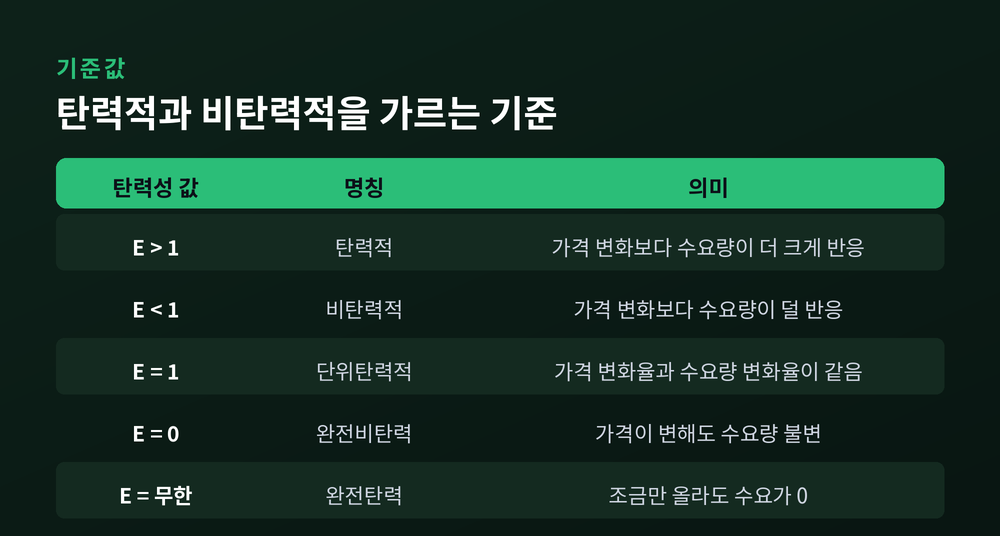
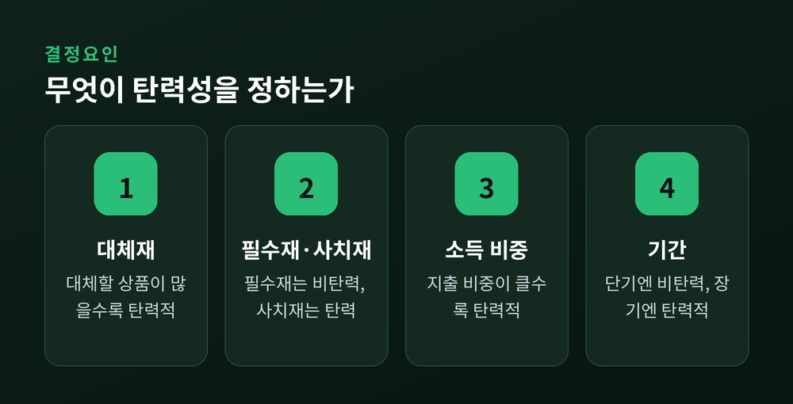
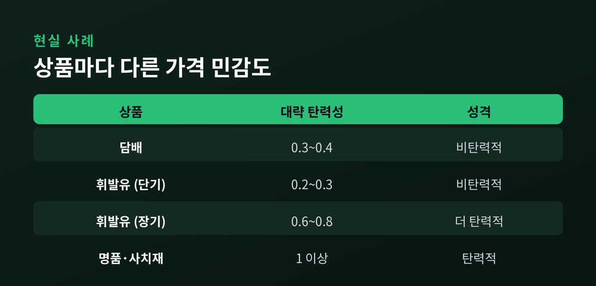
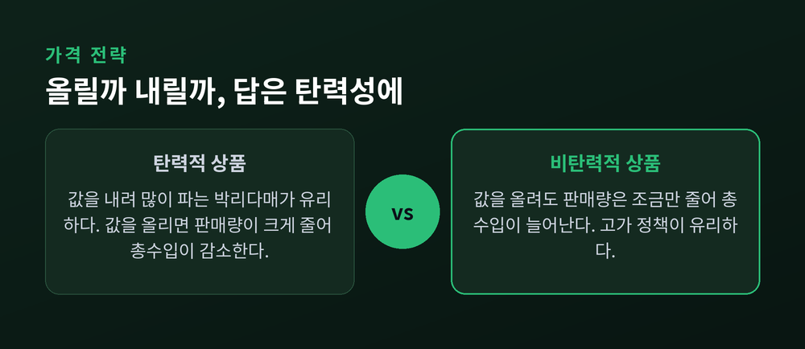
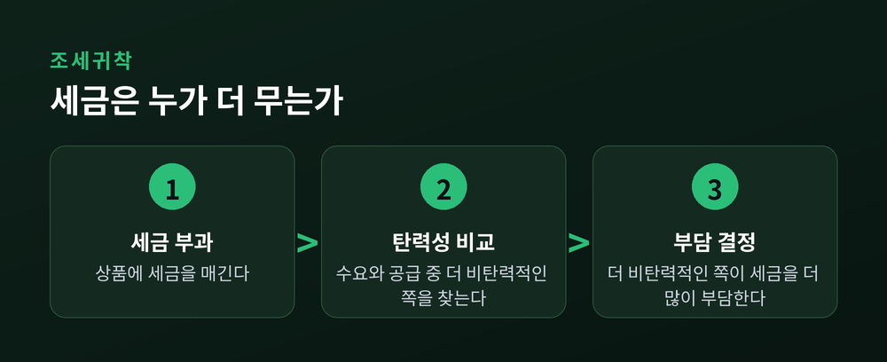

가격이 오르면 소비는 준다. 여기까지는 누구나 압니다.
문제는 "얼마나" 주느냐입니다. 그 민감도를 하나의 숫자로 잡아낸 것이 수요의 가격탄력성입니다.
이번 글에서는 수요의 가격탄력성이 무엇인지, 어떻게 계산하고, 담배와 휘발유의 소비가 왜 서로 다르게 움직이는지를 정리해 보겠습니다.
미리 답부터 말씀드리면 이렇습니다. 가격탄력성은 "가격이 1% 오를 때 수요량이 몇 % 줄어드는가"를 재는 자입니다. 그 값이 1보다 크면 탄력적, 작으면 비탄력적입니다. 그리고 이 하나의 숫자가 기업의 가격 전략과 정부의 세금 설계까지 좌우합니다.
수요의 가격탄력성은 가격 변화에 수요량이 얼마나 민감하게 반응하는지를 나타내는 지표입니다.
정의는 단순합니다.
가격탄력성 = 수요량의 변화율(%) ÷ 가격의 변화율(%)
가격이 10% 올랐을 때 수요량이 20% 줄었다면 탄력성은 2입니다. 5%만 줄었다면 0.5입니다.
수요의 법칙상 가격과 수요량은 반대로 움직이므로 원래 부호는 음수입니다. 다만 관례적으로 절댓값을 취해 양수로 다룹니다.
숫자가 클수록 소비자가 가격에 예민하다는 뜻입니다. 작을수록 값이 올라도 꿋꿋이 산다는 뜻이고요.
탄력성의 세계는 숫자 1을 경계로 갈립니다.
값이 1보다 크면 가격 변화보다 수요량이 더 크게 반응하는 탄력적 상태입니다. 1보다 작으면 덜 반응하는 비탄력적 상태고요.

한 가지 오해를 짚고 갑니다. 탄력적이라는 말은 "수요가 많다"는 뜻이 아닙니다.
탄력성은 양(量)이 아니라 민감도입니다. 아무리 많이 팔리는 상품이라도 가격에 둔감하면 비탄력적입니다.
계산에는 함정이 하나 있습니다.
가격이 1,000원에서 1,200원으로 오를 때와, 1,200원에서 1,000원으로 내릴 때. 같은 구간인데도 기준점을 어디로 잡느냐에 따라 변화율이 달라집니다.
이 문제를 없애려고 쓰는 것이 중점법(호탄력성)입니다.
시작값과 끝값의 평균을 분모로 삼는 방식입니다.
중점법 = [수량 변화 ÷ 두 수량의 평균] ÷ [가격 변화 ÷ 두 가격의 평균]
이렇게 하면 오르는 방향이든 내리는 방향이든 탄력성 값이 같게 나옵니다.
예를 들어 가격 변화율이 약 22%, 수요량 변화율이 약 40%로 계산되면 탄력성은 40 ÷ 22, 약 1.8이 됩니다. 탄력적인 상품이라는 뜻입니다.
숫자를 하나 직접 넣어 보겠습니다.
어떤 카페의 아메리카노가 4,000원일 때 하루 100잔 팔린다고 합시다. 값을 5,000원으로 올렸더니 60잔으로 줄었습니다.
두 가격의 평균은 4,500원, 두 수량의 평균은 80잔입니다.
가격은 1,000원 올랐으니 변화율은 1,000 ÷ 4,500, 약 22%. 수량은 40잔 줄었으니 40 ÷ 80, 즉 50%.
탄력성은 50 ÷ 22, 약 2.3입니다. 값에 매우 예민한 상품이라는 뜻입니다.
같은 가격 인상이라도 상품마다 소비자의 반응은 천차만별입니다.
그 차이를 만드는 요인은 크게 넷입니다.

첫째, 대체재의 존재입니다. 가장 중요한 요인입니다.
가까운 대체재가 많으면 값이 오를 때 다른 상품으로 갈아타기 쉽습니다. 그래서 탄력적입니다. 대체할 것이 없으면 비탄력적이고요.
둘째, 필수재냐 사치재냐입니다.
기본 식료품처럼 없으면 안 되는 것은 값이 올라도 계속 삽니다. 비탄력적입니다. 반면 사치품은 값이 오르면 미루거나 포기하기 쉽습니다.
셋째, 소득에서 차지하는 비중입니다.
지출 비중이 큰 상품일수록 가격 변화가 살림에 크게 와닿아 탄력적입니다. 껌이나 성냥처럼 비중이 작으면 값이 두 배가 돼도 소비는 잘 안 줄어듭니다.
넷째, 기간입니다.
같은 상품도 단기에는 비탄력적이지만 장기에는 탄력적입니다. 시간이 지나면 소비자가 대안을 찾고 습관을 바꾸기 때문입니다.
이론을 현실에 대보면 더 또렷해집니다.

담배의 가격탄력성은 대략 0.3에서 0.4로 비탄력적입니다.
가격이 10% 올라도 성인 흡연량은 약 3%만 줄어듭니다. 중독성 탓에 마땅한 대체재가 없기 때문입니다.
휘발유도 단기에는 비탄력적입니다. 탄력성이 대략 0.2에서 0.3 수준입니다.
당장은 차를 두고 다닐 수 없으니까요. 하지만 장기로 가면 0.6에서 0.8까지 커집니다.
값이 오래 높으면 연비 좋은 차로 바꾸고 대중교통으로 옮겨가기 때문입니다. "예전엔 그냥 넣었지만, 지금은 한 번 더 따진다"는 변화가 시간이 지나며 쌓이는 셈입니다.
반대로 명품 같은 사치재는 탄력적입니다.
소득에서 차지하는 비중이 크고, 안 사도 그만이라는 선택지가 늘 있기 때문입니다.
탄력성은 교과서 밖으로 나오면 곧장 돈 문제가 됩니다.
기업의 총수입은 가격과 판매량의 곱입니다. 가격을 올리면 단가는 오르지만 판매량은 줄어듭니다. 어느 쪽이 이기는지가 탄력성에 달렸습니다.

비탄력적인 상품은 값을 올릴수록 총수입이 늘어납니다. 판매량이 조금밖에 안 줄기 때문입니다.
탄력적인 상품은 반대입니다. 값을 내려 많이 파는 편이 총수입에 유리합니다.
"탄력적이면 값을 내리고, 비탄력적이면 값을 올려라." 가격 전략의 오랜 원칙이 여기서 나옵니다.
여기서 흔한 착각 하나. 총수입이 늘었다고 무조건 수요가 비탄력적인 것은 아닙니다.
수입 증가가 가격 인상 때문인지 판매량 증가 때문인지, 둘을 함께 봐야 판단이 어긋나지 않습니다.
탄력성은 가격 하나에만 쓰이지 않습니다.
소득탄력성은 소득이 변할 때 수요가 얼마나 변하는지를 봅니다.
소득이 늘 때 수요도 느는 상품이 정상재, 오히려 줄어드는 상품이 열등재입니다. 형편이 나아지자 값싼 메뉴를 줄이고 더 나은 것을 찾는 경우가 열등재의 예입니다.
교차탄력성은 다른 상품의 가격 변화에 대한 반응입니다.
값이 양수면 대체재(비행기표와 기차표), 음수면 보완재(빵과 땅콩버터)입니다.
공급탄력성은 값이 오를 때 공급량이 얼마나 느는지를 봅니다. 생산을 늘리기 쉬우면 탄력적, 토지나 해변 호텔처럼 늘리기 어려우면 비탄력적입니다.

세금 이야기로 마무리 짓겠습니다.
세금을 매기면 그 부담은 소비자와 판매자가 나눠 집니다. 나누는 비율은 탄력성이 정합니다.
원리는 간단합니다. 더 비탄력적인 쪽이 더 많이 뭅니다. 도망갈 곳이 없는 쪽이 부담을 떠안는 셈입니다.
담배가 대표적입니다. 수요가 비탄력적이라 세금을 붙여도 판매량은 크게 안 줄고, 인상분을 대부분 소비자가 부담합니다. 정부가 담배와 술에 세금을 매기는 이유이기도 합니다.
정리하면 이렇습니다.
가격탄력성은 "가격이 1% 움직일 때 수요가 몇 % 따라 움직이는가"를 재는 하나의 자입니다.
그 자 하나로 우리는 소비자의 마음, 기업의 가격표, 정부의 세금까지 읽어냅니다.
다만 이 숫자를 고정된 진리로 여기지는 마시길 권합니다. 같은 상품도 기간과 상황에 따라 탄력성은 달라집니다.
— 가격이 오르면 소비가 준다는 사실보다, "얼마나" 주는지를 아는 쪽이 늘 한 걸음 앞섭니다.
</content>